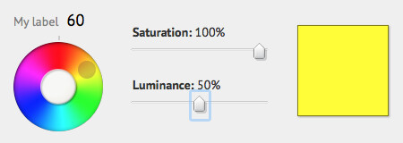
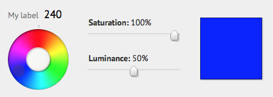
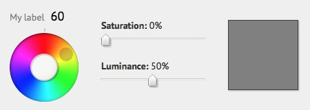
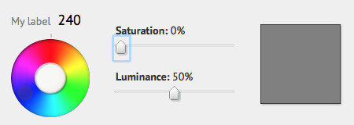
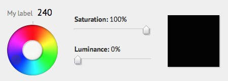
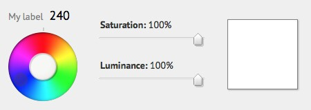

Colors of Web
Hue-Saturation-Luminosity (HSL); and not just Red-Green-Blue (RGB).
HSL is about how we think about colors. You might have observed in some of the CSS files that the colors are now specified as hsl(hue, saturation, luminosity) instead of rgb(red, green, blue). I was going through various color guides and have come up with this summary.
Hue
Hue is the actual selection of color that we want. The other two values have nothing to do with the shade selection. On a dial from 0° to 360° the color varies from red, through violet, to red again i.e. the rainbow colors.

I use YUI Color Picker to decide the colors on my pages and screens. You may use any other, lots of them on GitHub.

At 60° hue it is yellow and 240° blue. Once you have zeroed in on which shade you want move on to the next parameter i.e. saturation.
Saturation
I think of saturation in terms of a color’s age. A blue, or for that matter any colored, object getting older and older will fade in color and ultimately turn grey.


It doesn’t matter which color is selected (hue). When the saturation is 0% it will look grey. And when the saturation is 100% the color has full intensity; like a brand new object.
Luminosity
Have you ever entered a darkroom, where no light can enter? Not very long ago, photographers used to process photos in a darkroom. In a darkroom, in the absence of light, all colors look the same i.e. black.
Do you remember the analog brightness control in color televisions? If you turn the knob full clockwise everything turns white.


I think of luminosity in the same way i.e. how much white light is falling on the object. It does not matter what hue you have selected or what saturation you have set the object will look black when luminosity is 0% i.e. no light and it will look white when it is 100% i.e. full bright.
I find this analogy easier because thinking in terms of red-green-blue is not very natural. We don’t know exactly what combination of red, green and blue to use to produce a certain color. But our minds can comprehend color, intensity and brightness much more easily.
I hope you enjoyed. And you will use hsl() in your next CSS.